Abstract
Lensless imaging enables compact and versatile computational cameras by replacing bulky optics with thin coded elements. Reconstruction is challenging because large-footprint PSFs produce highly multiplexed observations, making inversion severely ill-conditioned and sensitive to calibration errors and model mismatch.
IFIN interleaves differentiable forward projections with learnable inverse updates at every stage, enabling measurement-domain and image-domain cues to refine each other throughout an encoder-decoder hierarchy. The same forward-inverse interleaving principle extends beyond lensless reconstruction to Gaussian deblurring and simulated inline holography.
Method
IFIN maintains coupled measurement-domain and image-domain streams. Each Integrated Forward-Inverse Block exchanges information through a Forward System Operator, an Inverse System Operator, and a shared learnable PSF field.
The model is built around a simple design principle: do not invert the measurement once and then discard the raw measurement cues. Instead, IFIN repeatedly projects image-domain features forward to the measurement domain and applies inverse updates from the measurement stream back to the image stream, so both domains stay coupled across the hierarchy.
The learnable PSF field lets the same architecture handle calibration mismatch and field-dependent blur. In the shift-variant setting, multiple local PSFs are learned end-to-end and shared by the forward and inverse operators, giving the network a physically grounded way to adapt to different regions of the field of view.
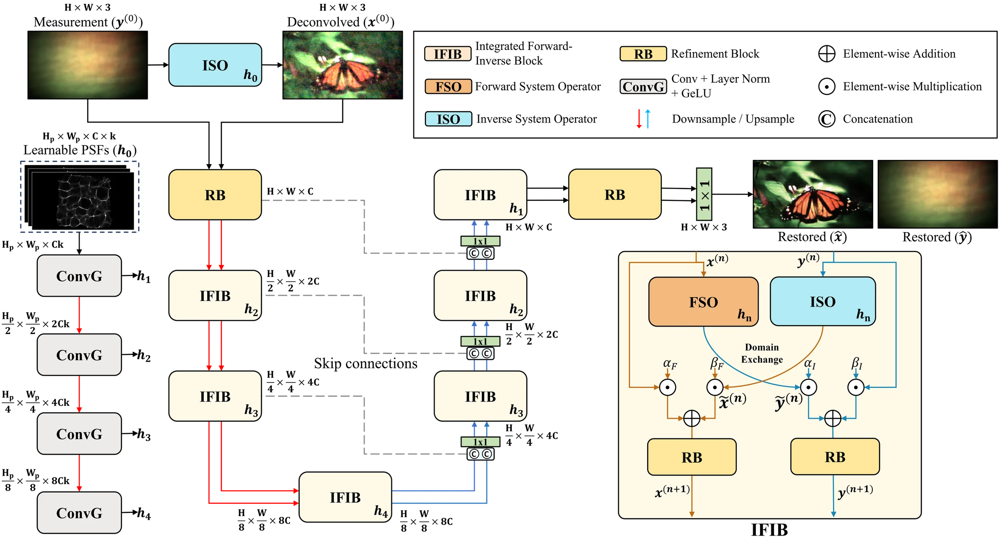
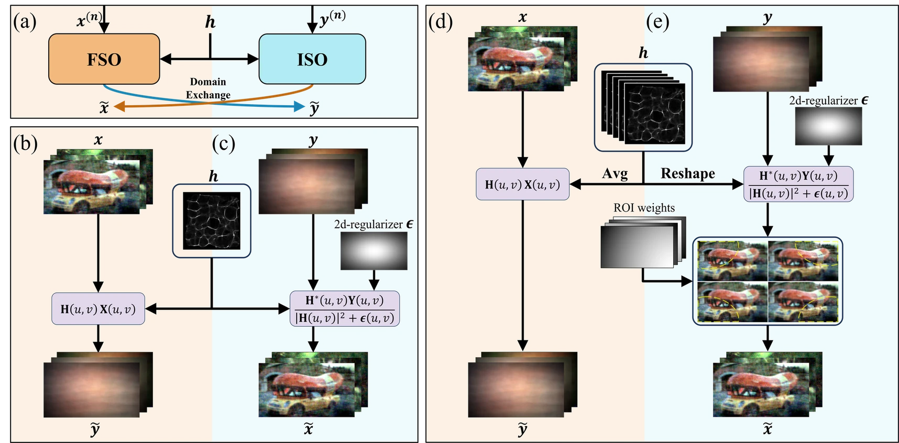
Main Lensless Benchmarks
Quantitative comparison on DiffuserCam, WiderCam, and the MultiWienerNet dataset. PSNR and SSIM are higher-is-better; LPIPS is lower-is-better.
These three benchmarks cover complementary lensless settings: a widely used diffuser dataset, our wide-FoV phase-mask camera with strong shift variance, and a miniscope dataset with measured spatially varying PSFs. IFIN improves all reported metrics across all three.
DiffuserCam
| Method | PSNR | LPIPS | SSIM |
|---|---|---|---|
| ADMM | 12.252 | 0.607 | 0.346 |
| Wiener Deconv. | 12.552 | 0.591 | 0.384 |
| ISO (Ours) | 16.528 | 0.544 | 0.404 |
| UNet | 21.230 | 0.394 | 0.656 |
| NAFNet | 24.830 | 0.239 | 0.810 |
| Le-ADMM-U | 23.261 | 0.312 | 0.765 |
| DeepLIR | 25.958 | 0.260 | 0.829 |
| MWNet | 24.832 | 0.247 | 0.810 |
| UPDN | 28.228 | 0.194 | 0.877 |
| MWDNs | 27.298 | 0.217 | 0.845 |
| LensNet | 27.650 | 0.201 | 0.868 |
| MoDL | 27.958 | 0.183 | 0.878 |
| IFIN (Ours) | 29.862 | 0.174 | 0.893 |
WiderCam
| Method | PSNR | LPIPS | SSIM |
|---|---|---|---|
| ADMM | 11.843 | 0.643 | 0.323 |
| Wiener Deconv. | 12.405 | 0.607 | 0.369 |
| ISO (Ours) | 17.240 | 0.462 | 0.444 |
| UNet | 21.890 | 0.474 | 0.646 |
| NAFNet | 23.857 | 0.245 | 0.769 |
| Le-ADMM-U | 21.956 | 0.278 | 0.748 |
| DeepLIR | 20.523 | 0.339 | 0.642 |
| MWNet | 23.001 | 0.255 | 0.766 |
| UPDN | 23.920 | 0.229 | 0.801 |
| MWDNs | 24.525 | 0.224 | 0.801 |
| LensNet | 24.615 | 0.219 | 0.806 |
| MoDL | 24.791 | 0.202 | 0.810 |
| IFIN (Ours) | 25.444 | 0.201 | 0.824 |
MultiWienerNet
| Method | PSNR | LPIPS | SSIM |
|---|---|---|---|
| ADMM | 19.189 | 0.557 | 0.420 |
| Wiener Deconv. | 18.658 | 0.640 | 0.302 |
| ISO (Ours) | 20.202 | 0.623 | 0.380 |
| UNet | 23.859 | 0.389 | 0.589 |
| NAFNet | 24.657 | 0.282 | 0.712 |
| Le-ADMM-U | 23.732 | 0.335 | 0.702 |
| DeepLIR | 22.556 | 0.379 | 0.642 |
| MWNet | 25.660 | 0.260 | 0.728 |
| UPDN | 24.364 | 0.287 | 0.707 |
| MWDNs | 27.436 | 0.236 | 0.780 |
| LensNet | 27.546 | 0.221 | 0.809 |
| MoDL | 28.504 | 0.202 | 0.831 |
| IFIN (Ours) | 31.083 | 0.175 | 0.866 |
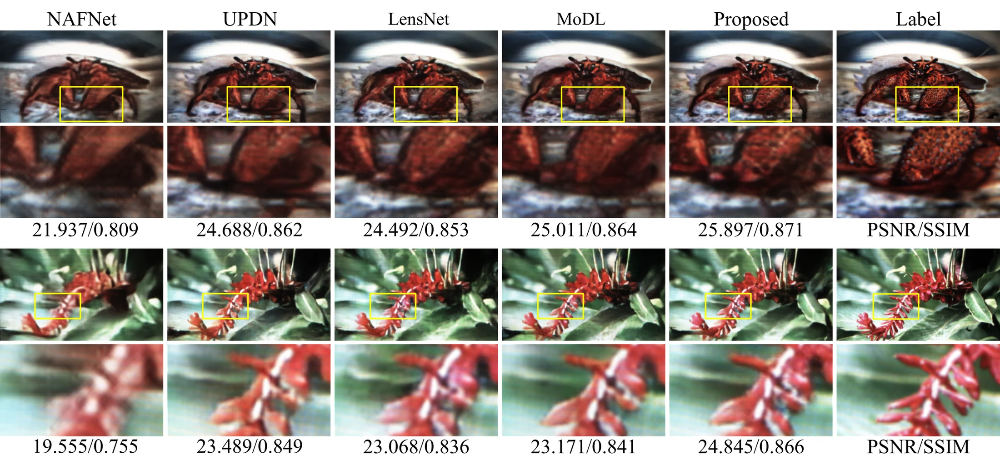
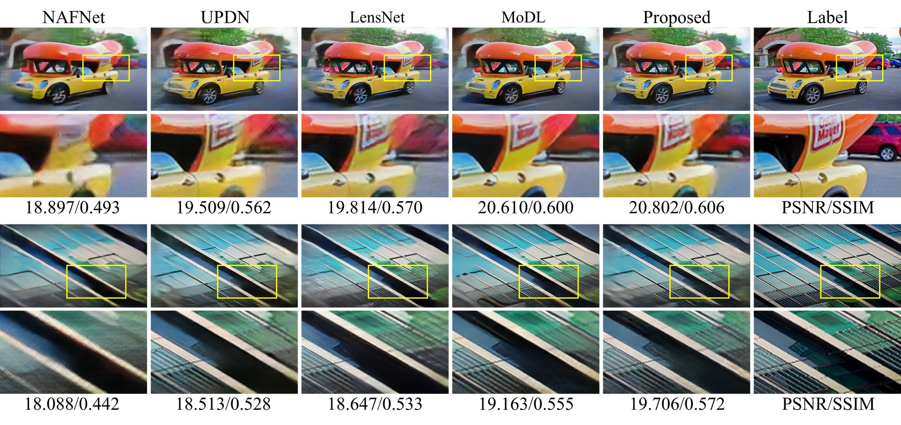
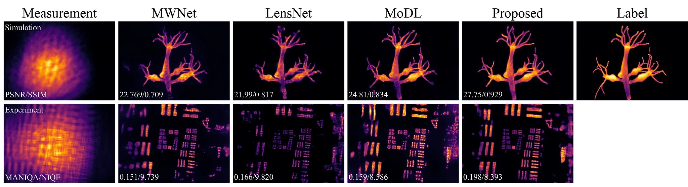
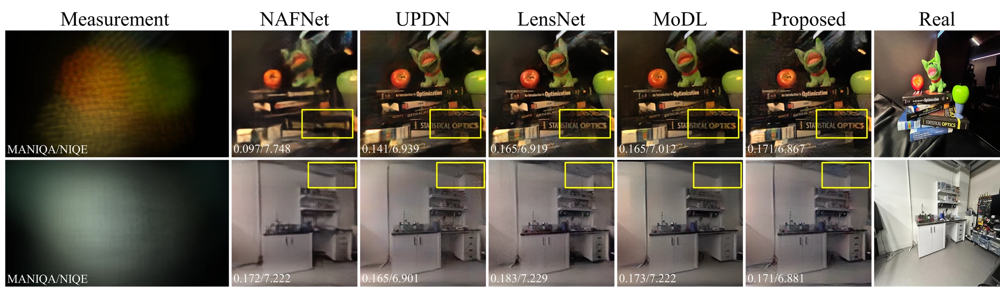
Additional Lensless Visual Results
Additional qualitative comparisons show the same pattern across more scenes: IFIN better preserves fine structures and reduces model-mismatch artifacts across both diffuser and wide-FoV phase-mask captures.
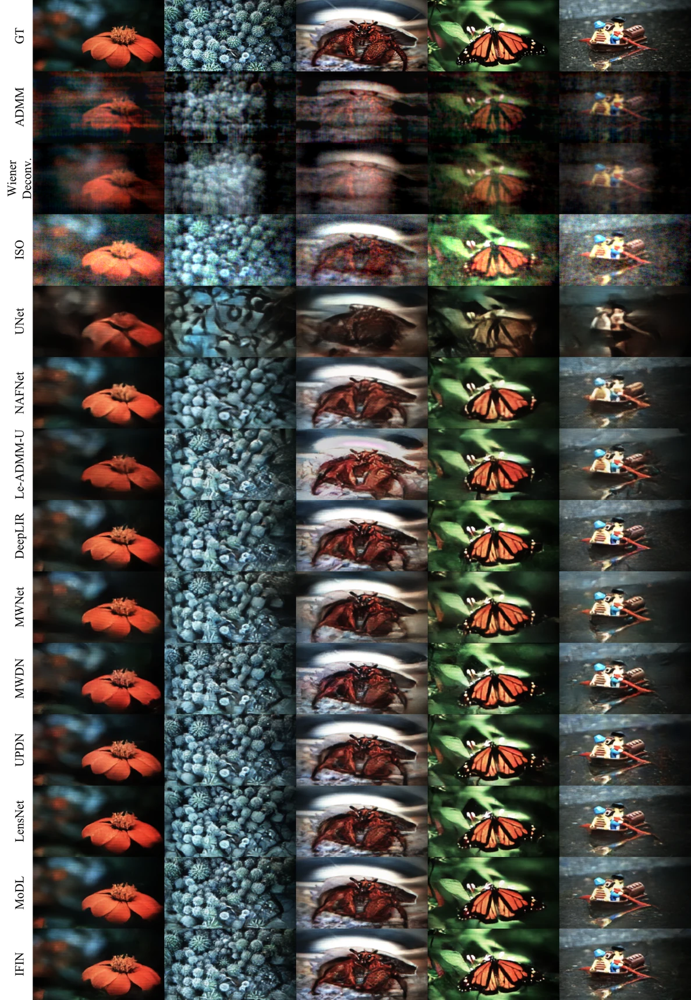
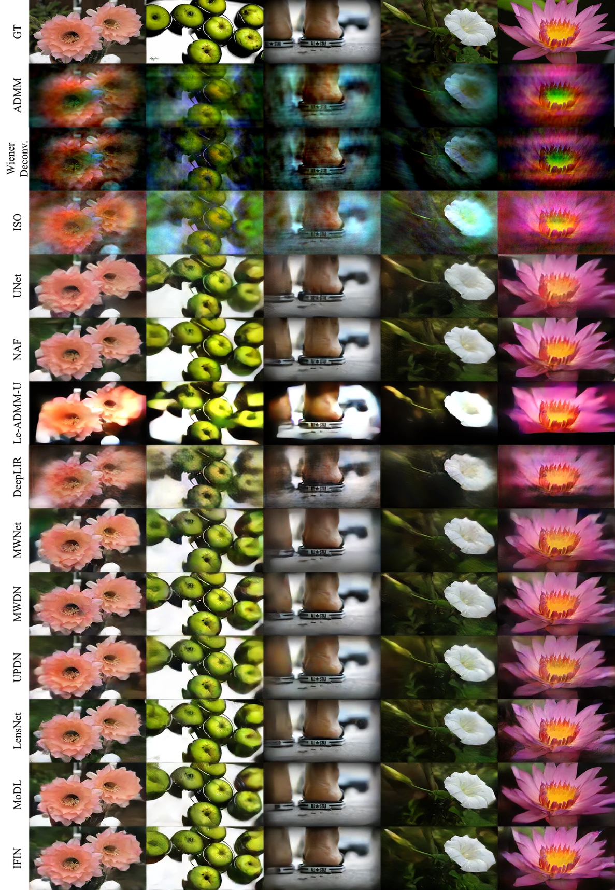
Beyond Lensless Imaging
The same interleaving principle is tested on Gaussian deblurring and simulated inline holography by swapping the physical operators to match each forward model.
For Gaussian deblurring, IFIN uses convolution/deconvolution operators with Gaussian kernels. For inline holography, the PSF modules are replaced by angular-spectrum forward propagation and matching back-propagation, while the forward-inverse exchange mechanism is retained.
Gaussian Deblurring
sigma = 5
| Method | PSNR | LPIPS | SSIM |
|---|---|---|---|
| RCAN | 25.303 | 0.220 | 0.810 |
| NAFNet | 25.625 | 0.205 | 0.825 |
| IFIN (Ours) | 25.100 | 0.230 | 0.800 |
Inline Holography Reconstruction
In the inline holography benchmark, IFIN reconstructs amplitude-only objects from simulated intensity holograms generated at z = 30 mm and wavelength 532 nm. The result indicates that the architecture is not tied to a single lensless camera model.
| Method | PSNR | LPIPS | SSIM |
|---|---|---|---|
| RCAN | 23.764 | 0.354 | 0.702 |
| NAFNet | 23.224 | 0.389 | 0.634 |
| NAFNet+ | 25.751 | 0.242 | 0.817 |
| IFIN (Ours) | 28.302 | 0.166 | 0.890 |
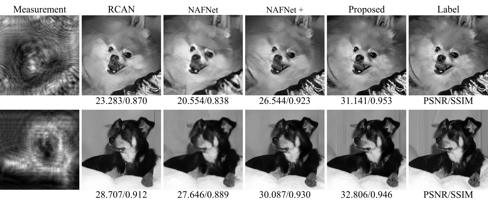
WiderCam Dataset
WiderCam is a wide-FoV lensless benchmark captured with a compact phase-mask camera. It contains 25,000 paired display-capture measurements, split into 24,000 training and 1,000 test images, and emphasizes strong field-dependent degradation near the image periphery.
The dataset was captured using a Sony IMX708 sensor module with a custom phase mask. MIRFlickr images were displayed on a 48-inch OLED screen at a 30 cm working distance, occupying roughly 80% of the display area. Raw measurements were captured at 4608 x 2592 and resized to 480 x 270 for training and evaluation.
Because WiderCam does not use a separate reference camera, supervision is aligned offline. A deconvolution reconstruction is matched to the displayed target, an affine transform is estimated from the display-capture pair, and the label image is warped to define pixel-aligned supervision.
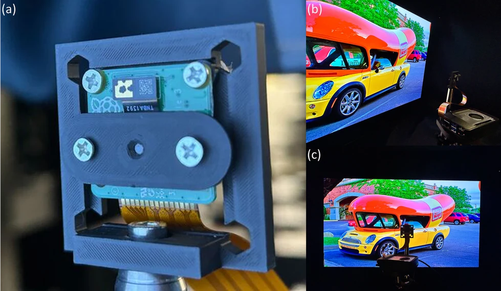
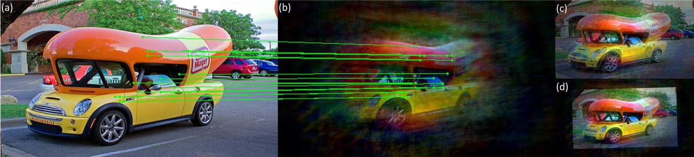
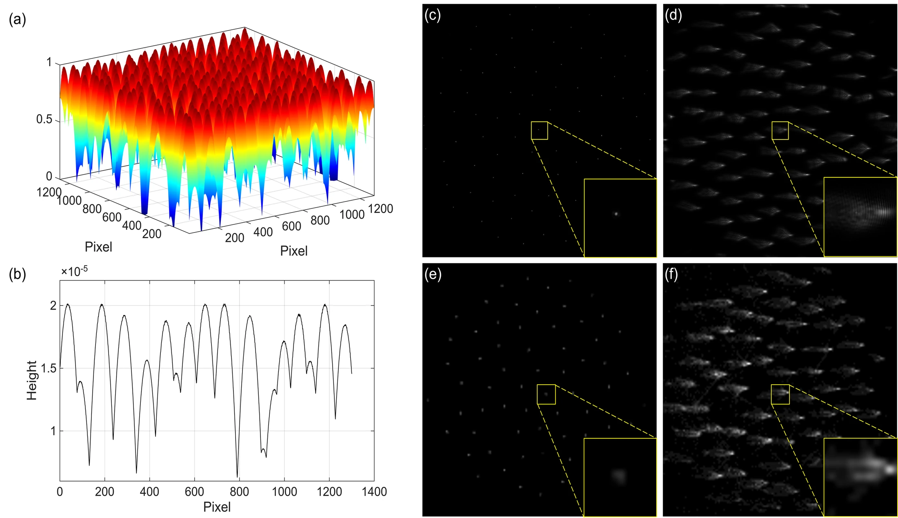
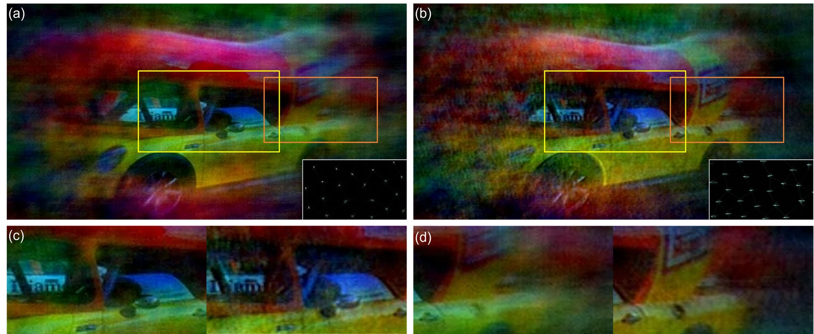
Code
git clone https://github.com/IIL-SNU/IFIN.git
cd IFIN
python -m venv .venv
source .venv/bin/activate
pip install -r requirements.txt
python train.py --config configs/default.yamlCitation
@inproceedings{bae2026ifin,
title = {Integrated Forward-Inverse Network for Lensless Image Reconstruction},
author = {Bae, Donggeon and Jung, Jaewoo and Kang, Yong Guk and Lee, Kyung Chul and Kim, Taeyoung and Kim, Jongho and Byun, Sangjun and Park, Joonsik and Lee, Seung Ah},
booktitle = {European Conference on Computer Vision (ECCV)},
year = {2026}
}